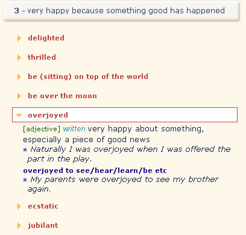

When you want, for example, to find a better word to replace 'very happy' in this sentence:
Mary was very happy when she was offered the job.
Find the keyword 'HAPPY' using the Activator index or by typing in the search box:
Choose the most suitable section, in this case it is section 3: 'very happy because something good has happened'. Read the definitions of all the words in the section by clicking on the orange arrows before the words.

Choose the best word and change your sentence to:
Mary was overjoyed when she was offered the job.
See also: